rustmatch implementation roadmap
Last reviewed: 2026-07-26
Implementation increments started: 10/12
Implementation increments complete: 10/12
Active: B2-H-0012 is retained for investigation but not admitted; H11
remains the exact production baseline
Next evidence goal: freeze an assertion-dispatch isolation successor that preserves H12's 185x-to-385x sparse-target gains while restoring Wuthering and reducing assertion preparation cost. The H12 result identifies a plausibly separable compiler/layout regression on a guard that cannot execute the new assertion path
This page is the at-a-glance map from the completed product planning to a tested rustmatch release. The detailed requirements, architecture, use cases, evidence contracts, and exit criteria remain in the main README. This graph shows dependency and status; it does not replace those definitions. Roadmap IDs identify evidence-bearing milestones, not required one-to-one pull request boundaries. The README's bootstrap sequence favors small vertical PRs that keep the system executable.
Hard optimization rule: Results from Java rmatch, RegexSet, Hyperscan, or any other competitor can nominate a Rust experiment, but cannot advance an optimization milestone. The acceptance baseline is the frozen, existing Rustmatch production path, not the competitor. Every performance-motivated change must preserve results and show a positive Rustmatch improvement beyond a predeclared noise threshold. Only a fully passing candidate may merge. Investigated, neutral, inconclusive, rejected, or slower results leave the production baseline unchanged. The versioned decision policy requires causal follow-up when large opposing effects expose a separable signal. Semantic extensions require correctness and applicable non-regression evidence, not a speedup.
The system-level target is stronger than the admission rule for one change: rustmatch should ultimately exceed Java rmatch on representative workloads where both engines enumerate the same events. Strong absolute throughput is progress, but does not by itself satisfy that reference gate.
Dependency graph
Select any task or gate to jump to its detailed description in the README. Color carries status or role, so task boxes do not repeat state labels. Every task and gate begins with a unique symbolic short name. These IDs are stable references for commits, pull requests, evidence manifests, and roadmap discussion even when a task's wording or color changes.

Solid arrows show required dependencies. Dotted arrows show evidence that accumulates across several increments; they are intentionally retained as a separate visual language from the execution path.
I6 through I8 record bootstrap optimizations completed before the systematic B1
campaign and before the B2 gate was adopted. They are historical evidence, not
precedent for bypassing the current sequence. The stable-host B1 campaign and
reviewed B2 analysis are now complete. Their durable
Optimization and scale synthesis is maintained at
docs/optimization-and-scale.md. The generated
Optimization attempt ledger retains every
merged, investigated, rejected, and inconclusive attempt, an improvement-only progress chart, and the
versioned Java rmatch, RegexSet, and Hyperscan scorecard. Its leading
H42 cross-engine snapshot uses only
exact current-production overlap and preserves H11 plus the wider pre-H11 B2
table as historical context. H42 entered production by explicit owner
authorization while its formal G9-v3 outcome remains investigate; the known
2.111% Wuthering regression remains retained. The ledger generator rejects a
future merged optimization until its current comparison revision advances with
it. B2-H-0001 completed
with exact semantics but
regressed both targets by about 28%; its shared-candidate revision is rejected
and not admitted. B2-H-0002 measured only 2.4618% lifecycle plus join at the
median, so no persistent-pool candidate was authorized. B2-H-0003 then measured
only 1.7699% and 1.4288% median removable partition skew, unstable slowest
partitions, and no stable compile-time predictor. Its load-aware partitioning
proposal is also rejected without production code. The refreshed review
also rejects B2-H-0005: doubling the cache budget reduced fallback by about 5%
at both endpoints, but paired throughput changed only +0.43% at sixteen workers
and -0.83% at twenty-four workers while hardware cache-miss rate worsened by
roughly 20% to 26%. No adaptive cache policy or diagnostic revision is
admitted. B2-H-0004 then measured external callback omission at only -0.16%
median scan-time opportunity at sixteen workers and +0.08% at thirty-two
workers; event-vector growth consumed only 0.033-0.078 ms. Exact buffering and
delivery batching are rejected without production code. B2-H-0008 then
reproduced the sparse and dense high-worker collapses at -42.52% and -41.30%;
logical input work scaled exactly with partitions while cache misses rose
47.07% and 61.97%. Topology-aware placement recovered only 0.70% and 0.12%.
That diagnostic admits no code, but the v11 review authorized exactly
B2-H-0009: parallel shared candidate construction followed by
partition-local prefix admission, with the existing private plan retained as
fallback. H9 subsequently preserved exact semantics and improved every primary
target by 122.143% to 734.672%; the sparse 24-worker target ran 8.35 times as
fast. The unchanged zero-output private fallback nevertheless regressed
2.00249% with all six pairs negative. The strict no-regression gate therefore
rejected the exact candidate under G9-v1 and admitted no code. The later
G9-v2 decision policy preserves that
admission result while classifying the mechanism as investigate. Its measured
algorithmic upside supports fresh review of a structurally isolated successor,
not benchmark-specific tuning.
The subsequent
recovery analysis found a
narrower first step. main and every direct private scanner moved by exactly
0x1cf0 bytes, while the rejected one-worker guard never executed the shared
planner. Static controls recover 0x1540, about 73% of that displacement, by
removing candidate-only diagnostics and leave a 0x7b0 shared-code residual.
The recommended successor therefore keeps the timed harness byte-identical to
baseline, moves phase diagnostics to a separate non-timed artifact, and
separates whole private and shared dispatch pipelines. A new internal crate is
the ranked fallback only if that bounded candidate still fails.
That successor became B2-H-0010. It passed the static proxy and preserved
exact semantics while improving all four intended targets by 118.381% to
709.958%. It nevertheless regressed sparse and dense 8 MiB fallbacks and the
one-worker zero-output guard by 20.120% to 24.928%; none of those cells created
the shared planner, and all crossed the unchanged three-percent veto. H10 is
therefore rejected and unmerged. Preparation and RSS were neutral, while an
inactive Wuthering guard also remained neutral, so the open question is now
path-sensitive scan codegen, placement, or cache/branch behavior.
That diagnosis found the concrete cause: H10 outlined the tiny
LiteralPrefilter::prefix_allows predicate inside the per-input-start private
hot loop, consuming 85.32% of sampled one-worker instructions. B2-H-0011
retained the shared architecture and restored that predicate's baseline
inlining shape. Under the unchanged eleven-cell G9-v2 matrix, all four primary
targets improved 116.181%-695.703%, while H10's three vetoing private paths
recovered to +0.641%-1.956%. Exact measured candidate bacd5c46 passed
correctness, order, static, host, and regression checks and merged without
source modification as de33ea1. The
retained H11 summary
records the matrix and evidence hashes. H9 and H10 remain rejected and excluded
from the merged-improvement graph.
The subsequent B2-H-0006 semantic design review resolves the old overlap blocker: input workers can own disjoint start-position ranges while reading the complete immutable input, so unbounded matches, assertions, duplicates, and unspecified callback ordering require no chunk reconciliation. It does not authorize code. H11 already performs one shared candidate pass and routes almost every retained candidate to one semantic partition, so H-0006 must first demonstrate at least 5% post-H11 phase headroom before a benchmark-only full-database prototype is justified.
The broader post-H11 future optimization portfolio reviews every currently known open direction and the negative evidence that closes earlier mechanisms. Its first-ranked assertion-bearing prefilter has now been measured as B2-H-0012. The semantic and algorithmic prediction passed spectacularly: sparse targets reached roughly 185 to 385 times baseline throughput with exact events. The artifact did not merge because the unrelated Wuthering guard regressed 3.038% and assertion preparation regressed 11.16% to 22.32%.
H12 therefore advances to a bounded recovery rather than production. Binary inspection shows five candidate-only sink-specialized assertion functions and changed ordinary scanner size and placement, while Wuthering cannot execute the assertion code path. The next experiment must isolate that dispatch behind a stable compiler boundary and profile filter construction. H11 routing and SIMD candidate discovery remain next after this recovery. B2-H-0006 stays at rank five because its semantics are sound but its incremental post-H11 headroom remains unproven.
Milestone ledger
The graph is intentionally conservative. A milestone changes to Active
only after implementation or fixture work exists and at least one named
evidence command runs. It changes to Complete only when its README exit criteria
and use-case evidence bundle pass from a clean checkout.
| ID | Milestone | Status | Evidence needed for Complete |
|---|---|---|---|
| P0 | Product requirements and scope | Complete | PRD, goals, non-goals, requirements, and release criteria in README |
| P1 | Architecture and executable-spine strategy | Complete | Architecture, boundaries, ADR backlog, and vertical delivery strategy in README |
| P2 | Use-case evidence contracts | Complete | Evidence classes plus UC-0 through UC-12 proof requirements in README |
| Q0 | Documentation and Rust hygiene policy | Complete | Contribution standard defines formatting, linting, visibility, errors, unsafe, dependencies, rustdoc, tests, evidence IDs, and required checks |
| Q1 | Community health and repository governance | Complete | Conduct, security, support, governance, ownership, issue, pull-request, dependency, changelog, and citation policies are present and linked |
| I0 | Time-boxed semantic charter | Complete | Accepted UTF-16 and event ADRs, versioned fixture schema, exact Maven Central no.rmz:rmatch:2.0.0-RC1 oracle, seven first-slice cases, deterministic golden results, and cargo xtask ci evidence |
| F0 | Fixture schema and Java oracle | Complete | Raw UTF-16 JSONL schema, structured rejection output, exact artifact checksum, two-run determinism, golden results, manifest hashes, and mandatory CI comparison |
| W0 | Cargo workspace and quality tooling | Complete | Rust 2024 workspace, pinned 1.97.0 toolchain, 1.85.0 MSRV lane, formatting, Clippy, tests, rustdoc, root quality command, and green GitHub Actions run |
| A0 | Minimal public API | Complete | Accepted ADR-0003, seven documented root types, compiled public example, typed errors, and one literal exercised through the complete private walking spine |
| I1 | Executable ASCII-literal spine | Complete | Public end-to-end literal matcher through real HIR, dense shared NFA, database, scan loop, sink, differential fixture, mandatory functional PR CI, coarse performance tripwire, benchmark smoke, and E0 evidence summary |
| C0 | Mandatory functional PR CI | Complete | Required GitHub quality gate runs formatting, Clippy, tests, Rustdoc, MSRV, the pinned Java oracle, all implemented differential tiers, and benchmark smoke |
| B0 | RegexSet-aware benchmark smoke | Complete | Correctness-gated RS-NATIVE set-membership and overlap-preserving RS-EVENTS lanes pass against pinned regex 1.13.1; systematic stable-machine scaling is deferred to X0/B1 |
| C1 | Coarse CI performance tripwire | Complete | Deterministic 64-pattern/1 MiB correctness gate, seven-scan median receipt, same-runner base/head comparator, catastrophic-slowdown tests, one automatic reverse-order retry, retained artifacts, and three green hosted-runner calibration attempts |
| E0 | UC evidence summary command | Complete | cargo xtask evidence runs the oracle, differential adapter, and benchmark smoke, then reports all UC-0 through UC-12 as partial or not started with named evidence |
| I2 | ASCII predicates | Complete | Dot, classes, ranges, negation, escapes, and six ASCII shorthands run through interned 128-bit predicates; exhaustive truth tables, bounded parser totality, a fuzz target, and 12 Java differential fixtures pass as I2-E1 |
| I3 | Alternation and grouping | Complete | Normalized recursive HIR, Thompson branching, nullable/minimum-length analysis, public composition fixtures, epsilon-closure invariants, bounded HIR/NFA property comparison, and 17 pinned Java cases pass as I3-E1 |
| I4 | Repetition and longest match | Complete | Unary and counted repetition run through normalized HIR and Thompson NFA loops; public overlap, ambiguity, nullable-loop, 1,000-bound, property, and recovery tests pass; 29 pinned Java cases pass as I4-E1; full repository and performance gates are green |
| I5 | UTF-16, flags, and assertions | Complete | Raw UTF-16, non-ASCII predicates, prefix/typed flags, a reproducible 65,536-entry Java case table, and 23 differential cases pass as I5-E1; NFA-native line anchors and ASCII word boundaries, exhaustive boundary classification, assertion adversaries, and 28 differential cases pass as I5-E2; assertion-free scans retain a separate hot path |
| S0 | Documented rmatch 2.x semantic parity gate | Complete | The complete documented consuming-language suite passes through the public Rust API against the pinned Java 2.0.0-RC1 oracle; pure zero-width rejection remains the explicit documented product difference |
| I6 | Lazy deterministic-state cache | Complete | Native ARM optimized/baseline equality, exact pressure fallback, 4.64 MiB measured RSS cost, focused positive gates, Wuthering/no-match scaling, cache sweep, and profile analysis retained as I6-P1/I6-B1 |
| C2 | Wuthering Heights CI performance tripwire | Complete | PR #16 reproduced exact 74,604-event equality on GitHub Linux x64 and measured 39.953 s versus 25.726 ms; broad threshold, reverse-order retry, and retained receipt upload are active on future PRs |
| I7 | Safe prefilter | Complete | Exact on/off equality, structural proof adversaries, explicit assertion/density/size/unfilterable paths, bounded storage, accepted compact-filter ADR, native focused gates, 1,000/5,000/10,000-pattern Wuthering gains, build accounting, rejected prototypes, and profile analysis retained as I7-P1/I7-B1 |
| I8 | Parallel partitions | Complete | Exact parity and lifecycle gates, unchanged total cache budget, protected one-worker path, complete native 1/2/3/4/6/8/12/18/24 sweep, 60.09% positive 10,000-pattern gain with 0.04% repeat drift, short-input and default-path guards, memory accounting, and profiles in the I8 evidence package |
| I9 | Benchmark integration | Complete | Exact-SHA archive and pinned container, ASCII/UTF-16 equivalence, NFA/single/eight-partition parity, strict validation, six retained receipts, and ordinary plot support are documented in the I9 evidence package |
| B1 | Cross-engine receipts and thread sweeps | Complete | The frozen B1 protocol produced 3,636 accepted runs, 21,020 retained samples, 248 confirmed winners, 34 explicit unresolved groups, 20 Rustmatch profile points, zero accepted failures, and a hash-audited final report; all rejected windows remain preserved and excluded |
| B2 | Full-dataset analysis and reviewed hypotheses | Complete | The complete dataset has quantitative and qualitative dispositions, a reviewed registry, and completed experiments through B2-H-0011. H9 and H10 remain rejected; H11 resolved their opposed signal without changing thresholds and merged exact measured source |
| G9 | Existing-Rustmatch candidate gate | Complete for B2-H-0011 | H11 preserved exact semantics, improved all primary targets 116.181%-695.703%, repaired all three H10 vetoes into +0.641%-1.956% gains, passed the full frozen matrix, and merged as exact candidate bacd5c46. Any next optimization requires a fresh B2 authorization |
| I10 | Hardening | Planned | Property/fuzz/Miri/soak evidence, public API/rustdoc audit, and dependency/license/security/MSRV audit |
| I11 | Release preparation | Planned | Exact package passes semantic, consumer, documentation, and performance gates; compatibility matrix and changelog complete |
| REL | First stable release | Planned | Published crate, signed tag, GitHub release, and archived release receipts |
Status update protocol
Yellow means that a task's declared prerequisites are satisfied and the task can be started. It does not mean that the roadmap has selected that task as the next or most important work. When several tasks are yellow, the next task is a separate decision based on current value, risk reduction, evidence needs, available capacity, and explicit maintainer direction. Starting the selected task changes it to orange; the remaining executable candidates stay yellow.
When work begins or a gate is completed:
- Keep the node's symbolic short name stable. New tasks and gates must receive a unique short name before they are added.
- Change the node's Mermaid class to
available,active,complete, orblockedas appropriate; node labels remain free of repeated status prose. - Update the milestone ledger with a link to the durable evidence.
- Update the summary counts at the top of this page and in the README link.
- Verify that the node still links to its detailed README description.
- Commit the roadmap update with the implementation or evidence that justifies it, not as an unsupported progress claim.
The roadmap status is evidence-driven. Code volume, elapsed time, and a green unit test for one disconnected layer do not by themselves move a box forward.